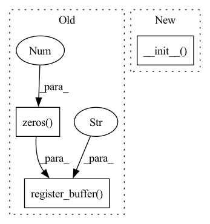

Pattern ID :19007
Before Change
self.membrane_reset = membrane_reset
// Blank parameter place holders
self.register_buffer("state" , torch.zeros(1 ))
self.register_buffer("activations", torch.zeros(1))
self.spikes_number = None
self.batch_size = batch_size
After Change
def __init__(self, *args, batch_size=1, **kwargs):
super().__init__( *args, **kwargs)
if batch_size is None:
self.batch_size = 1
else:
self.batch_size = batch_sizeIn pattern: SUPERPATTERN
Frequency: 3
Non-data size: 3
Instances Fragment ID: 61794220
Project Name: synsense/sinabs
Commit Name: f6598a7d9508a9a61097383579981bb26d5b3a2e
Time: 2021-05-18
Author: sadique.sheik@synsense.ai
File Name: sinabs/layers/iaf_bptt.py
M Class Name: SpikingLayer
N Class Name: SpikingLayer
M Method Name: __init__(1)
N Method Name: __init__(6)
M Parent Class: IAF
N Parent Class: nn.Module
M File Name: sinabs/layers/iaf_bptt.py
N File Name: sinabs/layers/iaf_bptt.py
M Start Line: 15
M End Line: 47
N Start Line: 153
N End Line: 160
Before Change
// Blank parameter place holders
self.register_buffer("state", torch.zeros(1))
self.register_buffer("activations" , torch.zeros(1 ))
self.spikes_number = None
@property
def membrane_subtract(self):After Change
membrane_reset: bool
If True, reset the membrane to 0 on spiking.
super().__init__(
*args,
**kwargs,
threshold=threshold,
threshold_low=threshold_low,
membrane_subtract=membrane_subtract,
membrane_reset=membrane_reset,
)
def forward(self, input_spikes: torch.Tensor):
Forward pass with given data. Fragment ID: 61794218
Project Name: synsense/sinabs
Commit Name: 2c2801a50874eac848813c725ef55e60275dcc46
Time: 2021-07-02
Author: felix.bauer@aictx.ai
File Name: sinabs/layers/iaf_bptt.py
M Class Name: IAF
N Class Name: IAF
M Method Name: __init__(5)
N Method Name: __init__(5)
M Parent Class: SpikingLayer
N Parent Class: SpikingLayer
M File Name: sinabs/layers/iaf_bptt.py
N File Name: sinabs/layers/iaf_bptt.py
M Start Line: 38
M End Line: 48
N Start Line: 40
N End Line: 47
Before Change
self.membrane_reset = membrane_reset
// Blank parameter place holders
self.register_buffer("state" , torch.zeros(1 ))
self.register_buffer("activations", torch.zeros(1))
self.spikes_number = None
def zero_grad(self, set_to_none: bool = False) -> None:After Change
membrane_reset: bool
If True, reset the membrane to 0 on spiking.
super().__init__(state_name="state", *args, **kwargs)
// Initialize neuron states
self.threshold = threshold
self.threshold_low = threshold_low Fragment ID: 61794217
Project Name: synsense/sinabs
Commit Name: 514a20e5a54c5dbea07db700967586c785df5a59
Time: 2021-11-10
Author: felix.bauer@aictx.ai
File Name: sinabs/layers/spiking_layer.py
M Class Name: SpikingLayer
N Class Name: SpikingLayer
M Method Name: __init__(5)
N Method Name: __init__(5)
M Parent Class: StatefulLayer
N Parent Class: torch.nn.Module
M File Name: sinabs/layers/spiking_layer.py
N File Name: sinabs/layers/spiking_layer.py
M Start Line: 40
M End Line: 49
N Start Line: 39
N End Line: 39